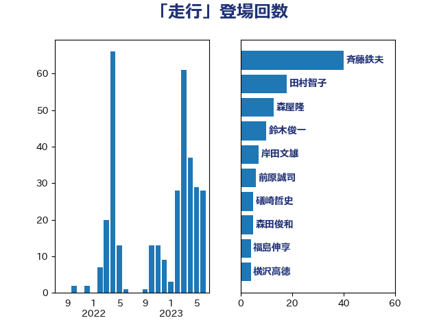

単語「走行」

| 斉藤鉄夫 | 公明党 | 40 回 |
| 田村智子 | 日本共産党 | 18 回 |
| 森屋隆 | 立憲民主党 | 13 回 |
| 鈴木俊一 | 自由民主党 | 10 回 |
| 岸田文雄 | 自由民主党 | 7 回 |
| 前原誠司 | 国民民主党 | 6 回 |
| 礒崎哲史 | 国民民主党 | 5 回 |
| 森田俊和 | 立憲民主党 | 5 回 |
| 福島伸享 | 無所属 | 4 回 |
| 横沢高徳 | 立憲民主党 | 4 回 |
| 古庄玄知 | 自由民主党 | 4 回 |
| 阿部司 | 日本維新の会 | 3 回 |
| 門山宏哲 | 自由民主党 | 3 回 |
| 空本誠喜 | 日本維新の会 | 3 回 |
| おおつき紅葉 | 立憲民主党 | 3 回 |
| 齋藤健 | 自由民主党 | 2 回 |
| 高橋光男 | 公明党 | 2 回 |
| 長浜博行 | 無所属 | 2 回 |
| 長坂康正 | 自由民主党 | 2 回 |
| 萩生田光一 | 自由民主党 | 2 回 |
| 緒方林太郎 | 無所属 | 2 回 |
| 神津たけし | 立憲民主党 | 2 回 |
| 河西宏一 | 公明党 | 2 回 |
| 木村英子 | れいわ新選組 | 2 回 |
| 斎藤アレックス | 国民民主党 | 2 回 |
| 山岸一生 | 立憲民主党 | 2 回 |
| 小野泰輔 | 日本維新の会 | 2 回 |
| 塩川鉄也 | 日本共産党 | 2 回 |
| 伊藤孝恵 | 国民民主党 | 2 回 |
| 鬼木誠 | 立憲民主党 | 1 回 |
| 高橋千鶴子 | 日本共産党 | 1 回 |
| 高木かおり | 日本維新の会 | 1 回 |
| 高市早苗 | 自由民主党 | 1 回 |
| 青木愛 | 立憲民主党 | 1 回 |
| 青島健太 | 日本維新の会 | 1 回 |
| 金子俊平 | 自由民主党 | 1 回 |
| 重徳和彦 | 立憲民主党 | 1 回 |
| 赤嶺政賢 | 日本共産党 | 1 回 |
| 谷川とむ | 自由民主党 | 1 回 |
| 西村康稔 | 自由民主党 | 1 回 |
| 西岡秀子 | 国民民主党 | 1 回 |
| 藤木眞也 | 自由民主党 | 1 回 |
| 簗和生 | 自由民主党 | 1 回 |
| 神谷宗幣 | 参政党 | 1 回 |
| 石井拓 | 自由民主党 | 1 回 |
| 矢倉克夫 | 公明党 | 1 回 |
| 牧野たかお | 自由民主党 | 1 回 |
| 渡辺猛之 | 自由民主党 | 1 回 |
| 清水貴之 | 日本維新の会 | 1 回 |
| 浜口誠 | 国民民主党 | 1 回 |
| 泉健太 | 立憲民主党 | 1 回 |
| 柳ヶ瀬裕文 | 日本維新の会 | 1 回 |
| 杉尾秀哉 | 立憲民主党 | 1 回 |
| 木村次郎 | 自由民主党 | 1 回 |
| 岸真紀子 | 立憲民主党 | 1 回 |
| 山本左近 | 自由民主党 | 1 回 |
| 山本剛正 | 日本維新の会 | 1 回 |
| 小宮山泰子 | 立憲民主党 | 1 回 |
| 宮崎雅夫 | 自由民主党 | 1 回 |
| 大西健介 | 立憲民主党 | 1 回 |
| 大岡敏孝 | 自由民主党 | 1 回 |
| 大塚耕平 | 国民民主党 | 1 回 |
| 塩田博昭 | 公明党 | 1 回 |
| 堤かなめ | 立憲民主党 | 1 回 |
| 古川康 | 自由民主党 | 1 回 |
| 古川元久 | 国民民主党 | 1 回 |
| 今枝宗一郎 | 自由民主党 | 1 回 |
| 串田誠一 | 日本維新の会 | 1 回 |
| 中川郁子 | 自由民主党 | 1 回 |
| 下野六太 | 公明党 | 1 回 |